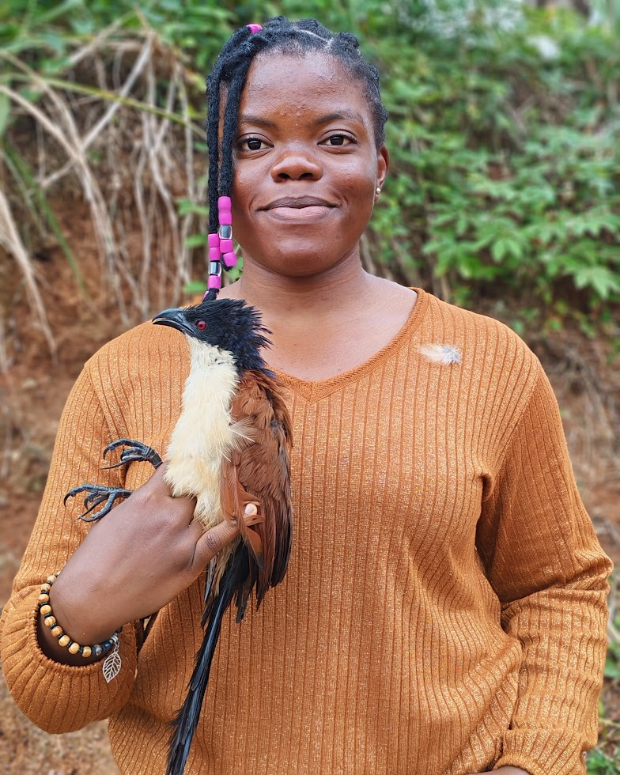
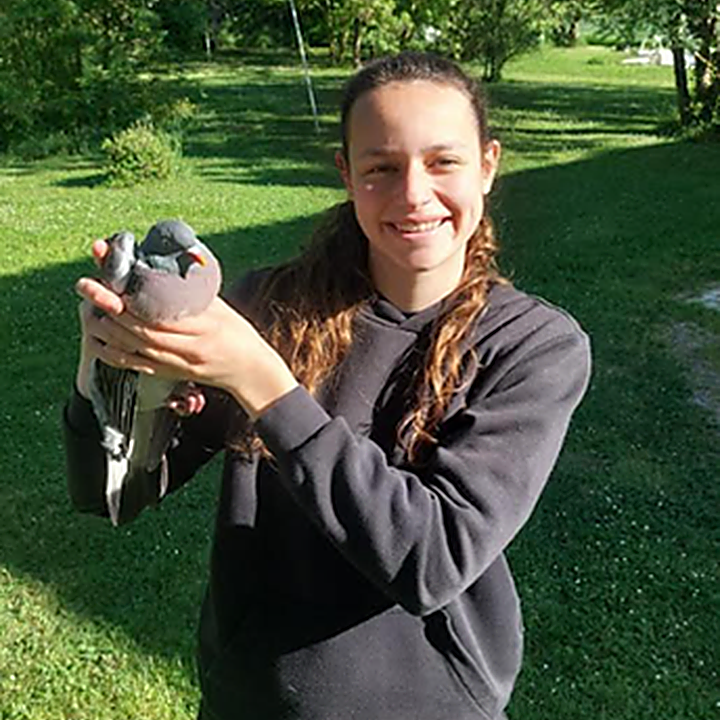

CHRISTIAN N. TCHANA
Students
Students

Current · MSc Year 2 ·
University of Yaoundé I
, Cameroon
Anaelle Bakami
Anaelle studies the effects of agricultural practices on farmland passerines in the Littoral Region of Cameroon. She is interested in how habitat structure, crop management and other farming practices shape bird assemblages and can inform bird-friendly conservation strategies in agricultural landscapes.

Former · MSc Year 1 ·
La Rochelle University
, France
Méline Ducept
Méline studied how pesticide exposure and proximity to conventionally managed agricultural fields may be associated with fungal communities in birds from the Zone Atelier Plaine & Val de Sèvre. Her project explored links between agricultural context and fungal diversity associated with farmland birds.